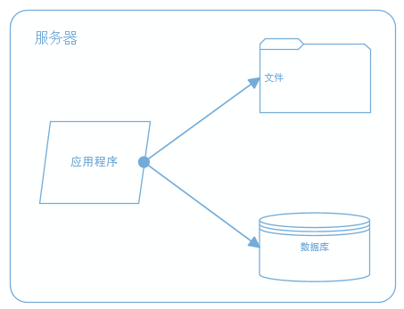
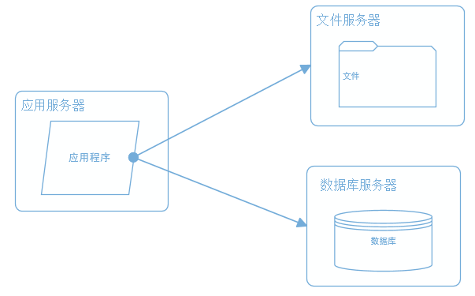
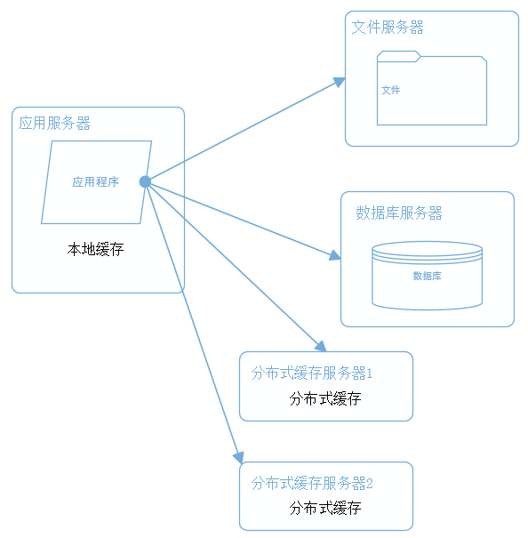
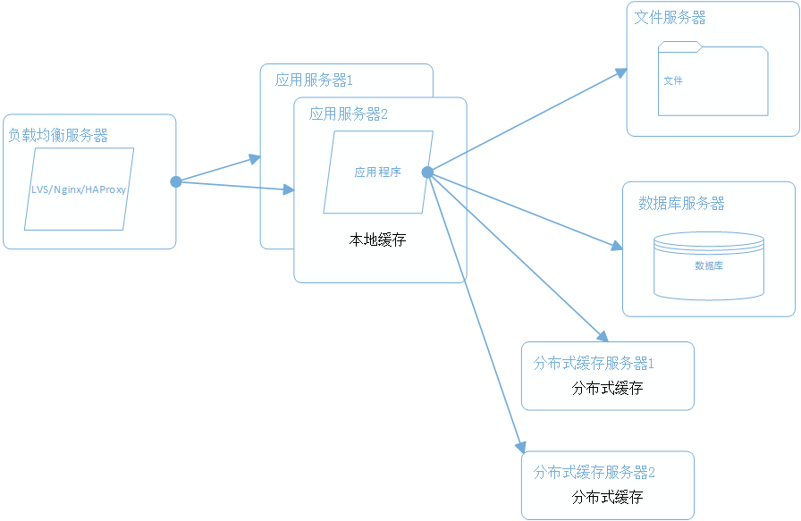
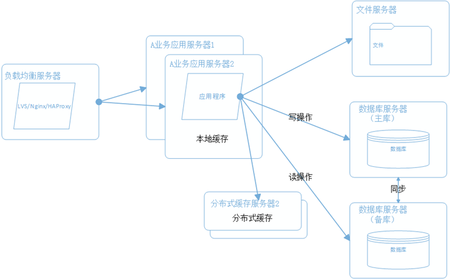
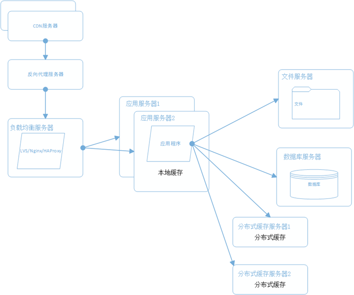
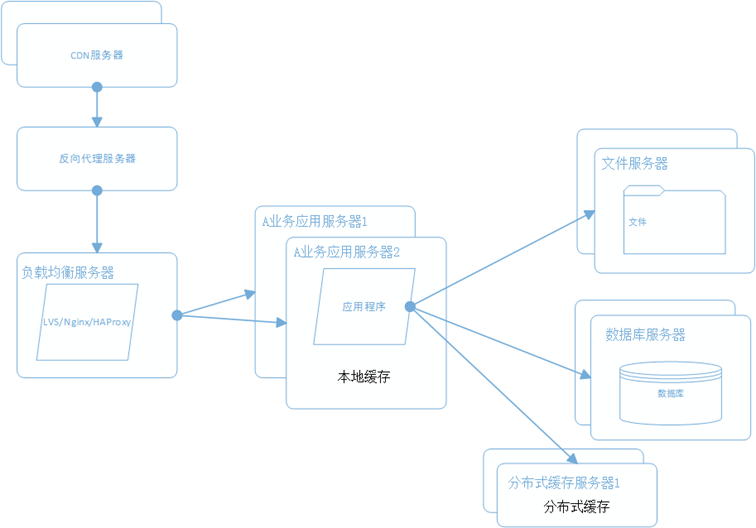
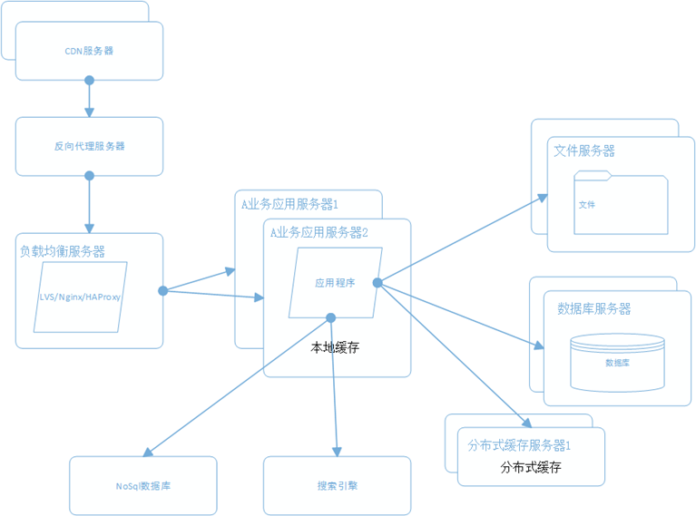
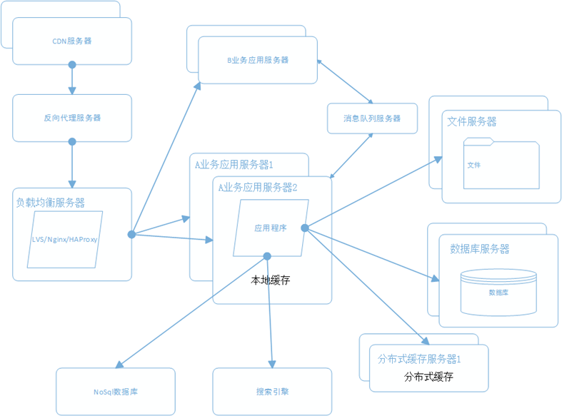
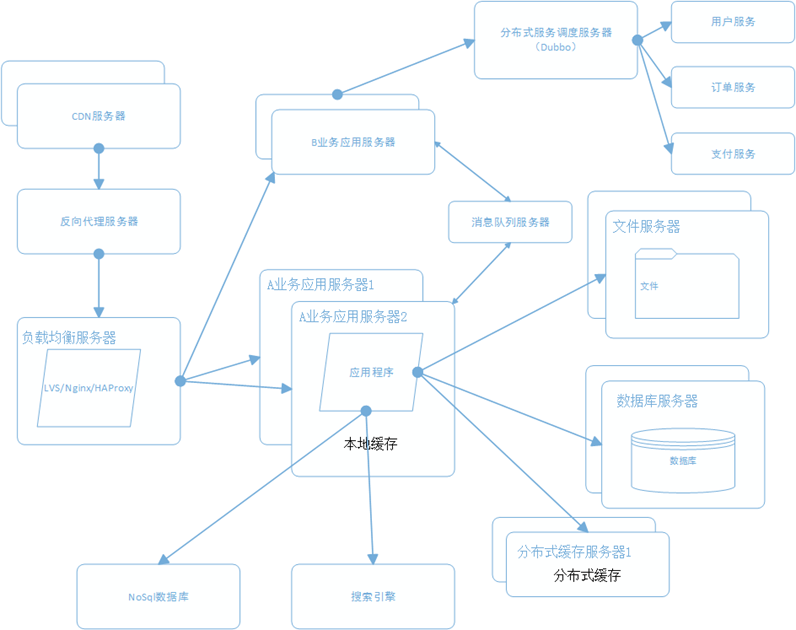

原文： 大型网站系统架构的演化, 作者：李平
一个成熟的大型网站（如淘宝、京东等）的系统架构并不是开始设计就具备完整的高性能、高可用、安全等特性，它总是随着用户量的增加，业务功能的扩展逐渐演变完善的，在这个过程中，开发模式、技术架构、设计思想也发生了很大的变化，就连技术人员也从几个人发展到一个部门甚至一条产品线。所以成熟的系统架构是随业务扩展而完善出来的，并不是一蹴而就；不同业务特征的系统，会有各自的侧重点，例如淘宝，要解决海量的商品信息的搜索、下单、支付，例如腾讯，要解决数亿的用户实时消息传输，百度它要处理海量的搜索请求，他们都有各自的业务特性，系统架构也有所不同。尽管如此我们也可以从这些不同的网站背景下，找出其中共用的技术，这些技术和手段可以广泛运行在大型网站系统的架构中，下面就通过介绍大型网站系统的演化过程，来认识这些技术和手段。
一、最开始的网站架构
最初的架构，应用程序、数据库、文件都部署在一台服务器上，如图：

二、应用、数据、文件分离
随着业务的扩展，一台服务器已经不能满足性能需求，故将应用程序、数据库、文件各自部署在独立的服务器上，并且根据服务器的用途配置不同的硬件，达到最佳的性能效果。

三、利用缓存改善网站性能
在硬件优化性能的同时，同时也通过软件进行性能优化，在大部分的网站系统中，都会利用缓存技术改善系统的性能，使用缓存主要源于热点数据的存在，大部分网站访问都遵循28原则（即80%的访问请求，最终落在20%的数据上），所以我们可以对热点数据进行缓存，减少这些数据的访问路径，提高用户体验。

缓存实现常见的方式是本地缓存、分布式缓存。当然还有CDN、反向代理等，这个后面再讲。本地缓存，顾名思义是将数据缓存在应用服务器本地，可以存在内存中，也可以存在文件，OSCache就是常用的本地缓存组件。本地缓存的特点是速度快，但因为本地空间有限所以缓存数据量也有限。分布式缓存的特点是，可以缓存海量的数据，并且扩展非常容易，在门户类网站中常常被使用，速度按理没有本地缓存快，常用的分布式缓存是Memcached、Redis。
四、使用集群改善应用服务器性能
应用服务器作为网站的入口，会承担大量的请求，我们往往通过应用服务器集群来分担请求数。应用服务器前面部署负载均衡服务器调度用户请求，根据分发策略将请求分发到多个应用服务器节点。

常用的负载均衡技术硬件的有F5，价格比较贵，软件的有LVS、Nginx、HAProxy。LVS是四层负载均衡，根据目标地址和端口选择内部服务器，Nginx是七层负载均衡和HAProxy支持四层、七层负载均衡，可以根据报文内容选择内部服务器，因此LVS分发路径优于Nginx和HAProxy，性能要高些，而Nginx和HAProxy则更具配置性，如可以用来做动静分离（根据请求报文特征，选择静态资源服务器还是应用服务器）。
五、数据库读写分离和分库分表
随着用户量的增加，数据库成为最大的瓶颈，改善数据库性能常用的手段是进行读写分离以及分表，读写分离顾名思义就是将数据库分为读库和写库，通过主备功能实现数据同步。分库分表则分为水平切分和垂直切分，水平切换则是对一个数据库特大的表进行拆分，例如用户表。垂直切分则是根据业务不同来切换，如用户业务、商品业务相关的表放在不同的数据库中。

六、使用CDN和反向代理提高网站性能
假如我们的服务器都部署在成都的机房，对于四川的用户来说访问是较快的，而对于北京的用户访问是较慢的，这是由于四川和北京分别属于电信和联通的不同发达地区，北京用户访问需要通过互联路由器经过较长的路径才能访问到成都的服务器，返回路径也一样，所以数据传输时间比较长。对于这种情况，常常使用CDN解决，CDN将数据内容缓存到运营商的机房，用户访问时先从最近的运营商获取数据，这样大大减少了网络访问的路径。比较专业的CDN运营商有蓝汛、网宿。
而反向代理，则是部署在网站的机房，当用户请求达到时首先访问反向代理服务器，反向代理服务器将缓存的数据返回给用户，如果没有没有缓存数据才会继续走应用服务器获取，也减少了获取数据的成本。反向代理有Squid，Nginx。

七、使用分布式文件系统
用户一天天增加，业务量越来越大，产生的文件越来越多，单台的文件服务器已经不能满足需求。需要分布式的文件系统支撑。常用的分布式文件系统有NFS。

八、使用NoSql和搜索引擎
对于海量数据的查询，我们使用nosql数据库加上搜索引擎可以达到更好的性能。并不是所有的数据都要放在关系型数据中。常用的NOSQL有mongodb和redis，搜索引擎有lucene。

九、将应用服务器进行业务拆分
随着业务进一步扩展，应用程序变得非常臃肿，这时我们需要将应用程序进行业务拆分，如百度分为新闻、网页、图片等业务。每个业务应用负责相对独立的业务运作。业务之间通过消息进行通信或者同享数据库来实现。

十、搭建分布式服务
这时我们发现各个业务应用都会使用到一些基本的业务服务，例如用户服务、订单服务、支付服务、安全服务，这些服务是支撑各业务应用的基本要素。我们将这些服务抽取出来利用分部式服务框架搭建分布式服务。淘宝的Dubbo是一个不错的选择。

小结
大型网站的架构是根据业务需求不断完善的，根据不同的业务特征会做特定的设计和考虑，本文只是讲述一个常规大型网站会涉及的一些技术和手段。